1. Acesso e identidade
Login pelo código individual vinculado à matrícula, confirmação obrigatória do cargo e sessão em cookie de 12 h (um turno). O cargo define a camada de visão: própria, operacional ou estratégica.
Documentação ilustrada • 10 de outubro de 2026 • Ícones por unDraw
O NexusPort é a plataforma de gestão operacional do Terminal STS-01 (Porto de Santos). Ele acompanha a carga do agendamento à entrega, formaliza a inspeção técnica, controla o pátio e as embarcações e mantém uma trilha auditável de todas as decisões críticas. Esta página explica o funcionamento de cada parte e mostra, com capturas reais, o que cada perfil vê ao entrar.
As capturas desta página foram geradas em ambiente local com dados fictícios de demonstração
(equivalente ao supabase/seed.sql) e sem credenciais de produção.
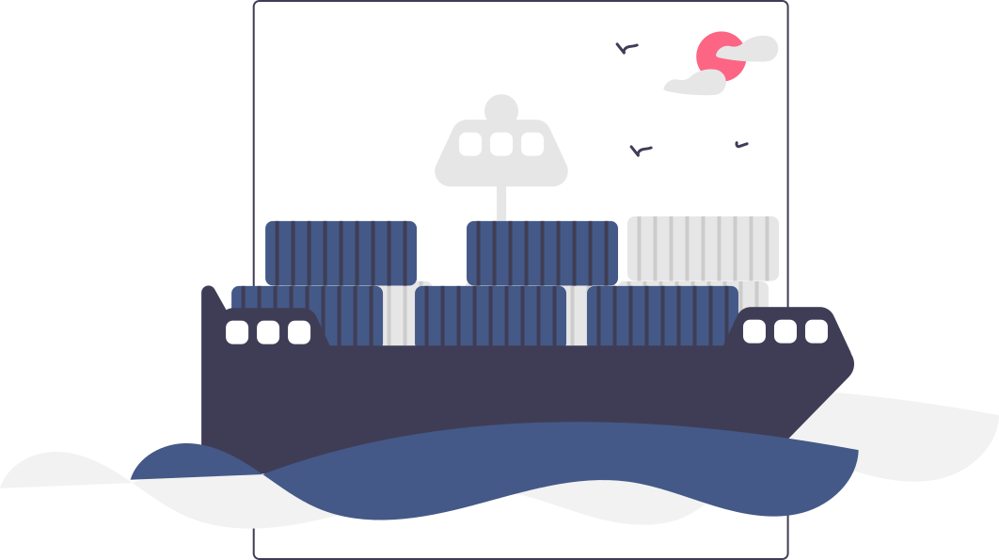
Cada pilar abaixo corresponde a um conjunto de telas e regras do sistema. A ordem é a do uso diário no terminal: identidade, entrada da carga, inspeção, pátio, despacho, comando e campo.
Login pelo código individual vinculado à matrícula, confirmação obrigatória do cargo e sessão em cookie de 12 h (um turno). O cargo define a camada de visão: própria, operacional ou estratégica.
A carga entra em AGENDAMENTO com data prevista de entrega e destino; no recebimento é conferida contra o checklist do tipo de carga e recebe QR Code com etiqueta A4.
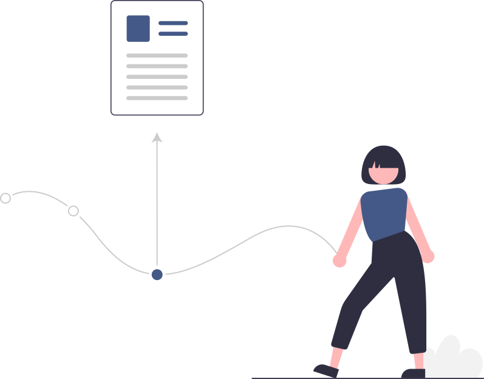
O inspetor executa o checklist item a item. A aprovação só é liberada quando 100% dos itens críticos estão conformes (RN 14); a recusa exige motivo, que vai para a auditoria.
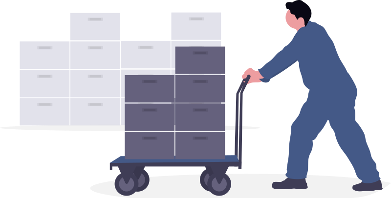
Aprovada, a carga é armazenada em baia e vinculada a contêiner e navio. O sistema mantém berços, guindastes e a localização das embarcações com ETA por rota.
O supervisor (ou o substituto delegado) libera a saída, cancela entregas e responde por decisões que ficam registradas na trilha imutável com justificativa formal.
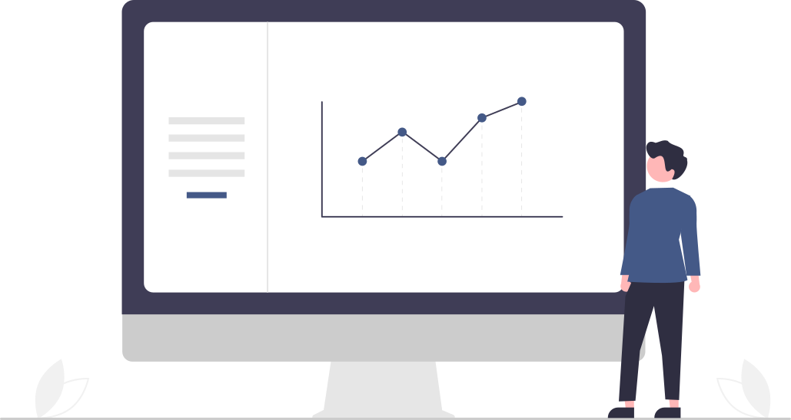
O painel consolida KPIs e gráficos por camada de visão; toda alteração relevante vai para logs_alteracoes e toda decisão crítica para trail_decisoes com retificações anexáveis.
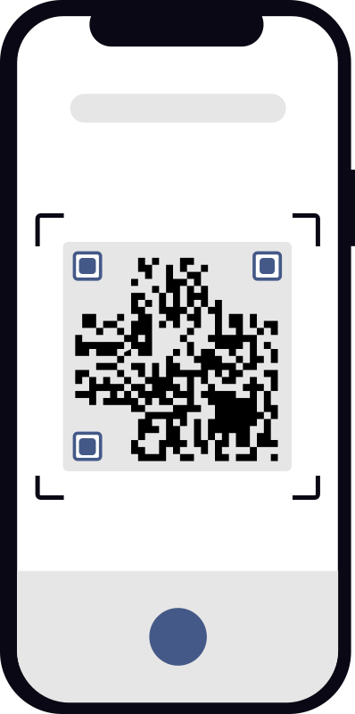
O scanner QR funciona no celular: leitura por câmera ou digitação, com registro da leitura. O botão de pânico é global e propaga o alerta em tempo real para todas as telas.
O NexusPort é um front-end estático que conversa direto com o Supabase (PostgREST, Realtime e Edge Functions). Não há servidor de aplicação próprio: as regras vivem nas telas, nas políticas do banco e nas funções de borda.
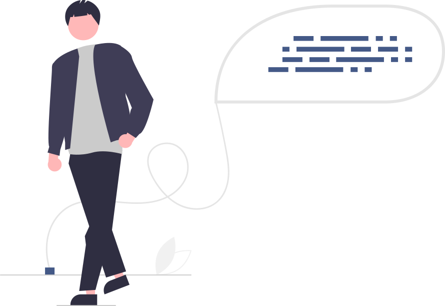
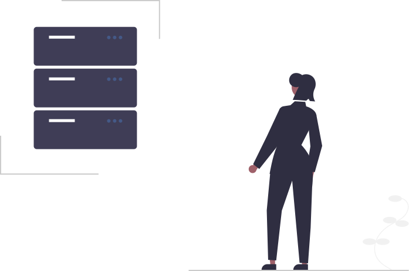
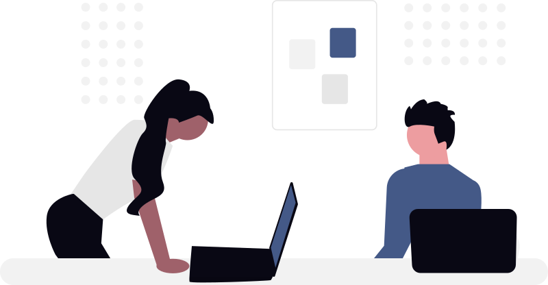
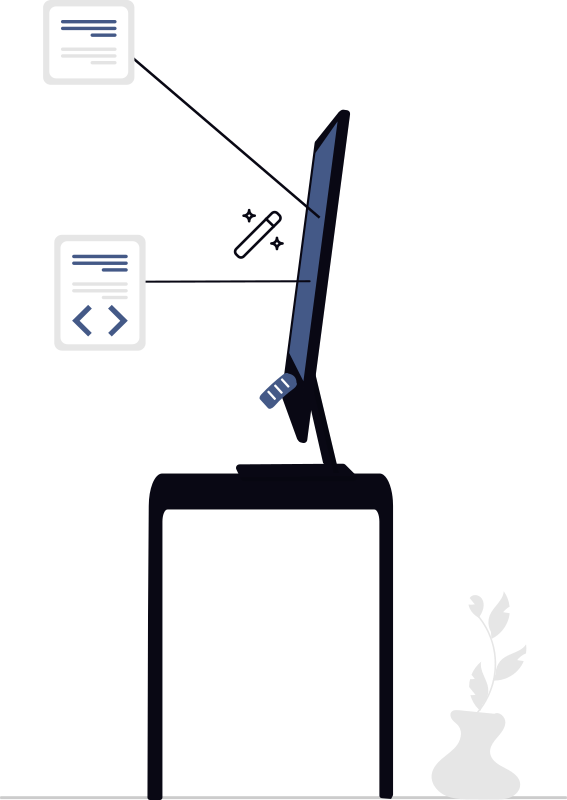
| Regra | Como aparece no sistema |
|---|---|
| RN 14 — Inspeção | Aprovar carga exige 100% dos itens críticos conformes; qualquer item não conforme bloqueia a aprovação e habilita a recusa com motivo. |
| RN 15 — Credencial | Perda ou esquecimento invalida o código individual, reemitido presencialmente pelo Técnico em Portos mantendo a mesma matrícula. |
| RN 12 — Cascata de status | A mudança da localização do navio propaga o status das cargas vinculadas (prompt no banco): EM_TRANSITO ↔ ENTREGUE. |
| RF 12/13 — Auditoria | Toda alteração entra em logs_alteracoes e toda decisão crítica em trail_decisoes, com retificações anexadas em vez de exclusão. |
| RF 14 — Delegação | No máximo um substituto ativo por supervisor, com vigência explícita e revogação registrada. |
| Emergência | Qualquer funcionário autenticado pode acionar o botão de pânico; o alerta chega a todas as telas conectadas e é registrado em emergencias. |
O cargo vem do cadastro funcional e não pode ser trocado na tela: ao confirmar, o operador assume a
camada de visão correspondente. As telas abaixo são as liberadas para cada cargo pela matriz
PAGE_PERMISSIONS de js/auth-guard.js.
| Cargo | Nível | Camada de visão | Telas liberadas |
|---|---|---|---|
| Diretor-Presidente/Superintendente | Nível Estratégico | Visão Estratégica | Confirmação de Cargo · Painel de Comando · Cargas & Operações de Pátio · Inspeção & Checklist · Scanner QR Code · Embarcações, Contêineres & GPS · Manutenção & Ordens de Serviço · Delegação de Supervisor · Gestão de Pessoas (Técnico em Portos) · Relatórios & PDF |
| Diretor de Operações e Logística | Nível Estratégico | Visão Estratégica | Confirmação de Cargo · Painel de Comando · Cargas & Operações de Pátio · Inspeção & Checklist · Scanner QR Code · Embarcações, Contêineres & GPS · Manutenção & Ordens de Serviço · Delegação de Supervisor · Gestão de Pessoas (Técnico em Portos) · Relatórios & PDF |
| Conselho de Administração | Nível Estratégico | Visão Estratégica | Confirmação de Cargo · Painel de Comando · Cargas & Operações de Pátio · Inspeção & Checklist · Scanner QR Code · Embarcações, Contêineres & GPS · Manutenção & Ordens de Serviço · Delegação de Supervisor · Gestão de Pessoas (Técnico em Portos) · Relatórios & PDF |
| Supervisor / Gerente de Operações | Nível Gestão | Visão Operacional | Confirmação de Cargo · Painel de Comando · Cargas & Operações de Pátio · Inspeção & Checklist · Scanner QR Code · Embarcações, Contêineres & GPS · Manutenção & Ordens de Serviço · Delegação de Supervisor · Relatórios & PDF |
| Inspetor | Nível Tático | Visão Operacional | Confirmação de Cargo · Painel de Comando · Cargas & Operações de Pátio · Inspeção & Checklist · Scanner QR Code · Embarcações, Contêineres & GPS · Manutenção & Ordens de Serviço · Relatórios & PDF |
| Técnico em Portos | Nível Operacional | Visão Própria | Confirmação de Cargo · Painel de Comando · Scanner QR Code · Gestão de Pessoas (Técnico em Portos) · Relatórios & PDF |
| Estivador | Nível Operacional | Visão Própria | Confirmação de Cargo · Painel de Comando · Cargas & Operações de Pátio · Scanner QR Code · Relatórios & PDF |
| Conferente de Carga | Nível Operacional | Visão Própria | Confirmação de Cargo · Painel de Comando · Cargas & Operações de Pátio · Scanner QR Code · Relatórios & PDF |
| Arrumador e Consertador | Nível Operacional | Visão Própria | Confirmação de Cargo · Painel de Comando · Cargas & Operações de Pátio · Scanner QR Code · Relatórios & PDF |
| Planejador de Pátio e de Navios | Nível Operacional | Visão Própria | Confirmação de Cargo · Painel de Comando · Cargas & Operações de Pátio · Scanner QR Code · Embarcações, Contêineres & GPS · Relatórios & PDF |
Para mostrar as três camadas de visão, as capturas foram feitas entrando de verdade em três contas de demonstração — cada uma com um cargo diferente e, por consequência, um conjunto distinto de telas.
Diretor-Presidente/Superintendente
MAT-0000NX-0000-SPConta de diretoria: enxerga todos os indicadores, inclusive valor declarado e produtividade, além da trilha completa de decisões e da gestão de pessoas.
10 telas capturadas nesta conta.
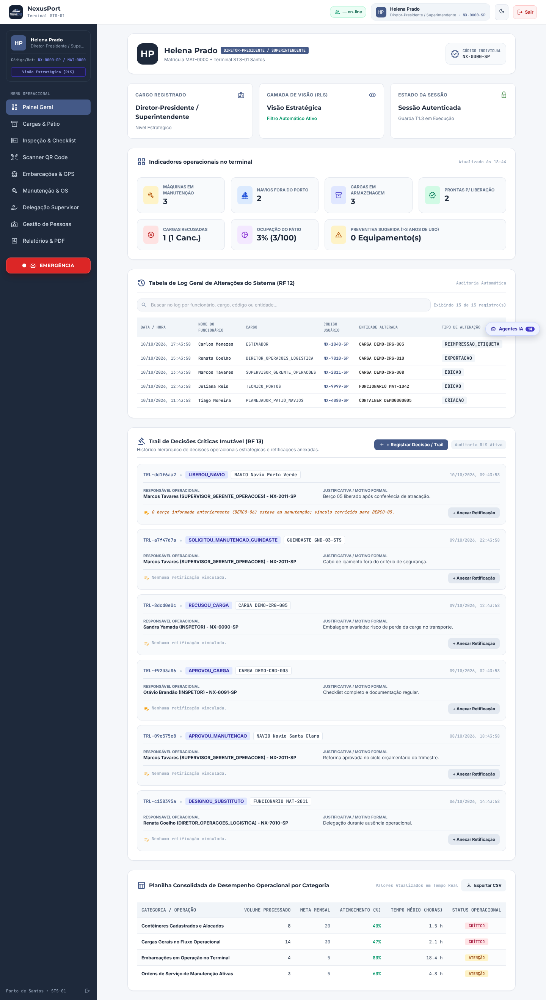
Ver as capturas desta conta Ir para a galeria desta contaSupervisor / Gerente de Operações
MAT-2011NX-2011-SPConta de gestão operacional: libera saídas de carga, aprova manutenções, delega substituto com vigência e responde pela trilha de decisões do turno.
9 telas capturadas nesta conta.
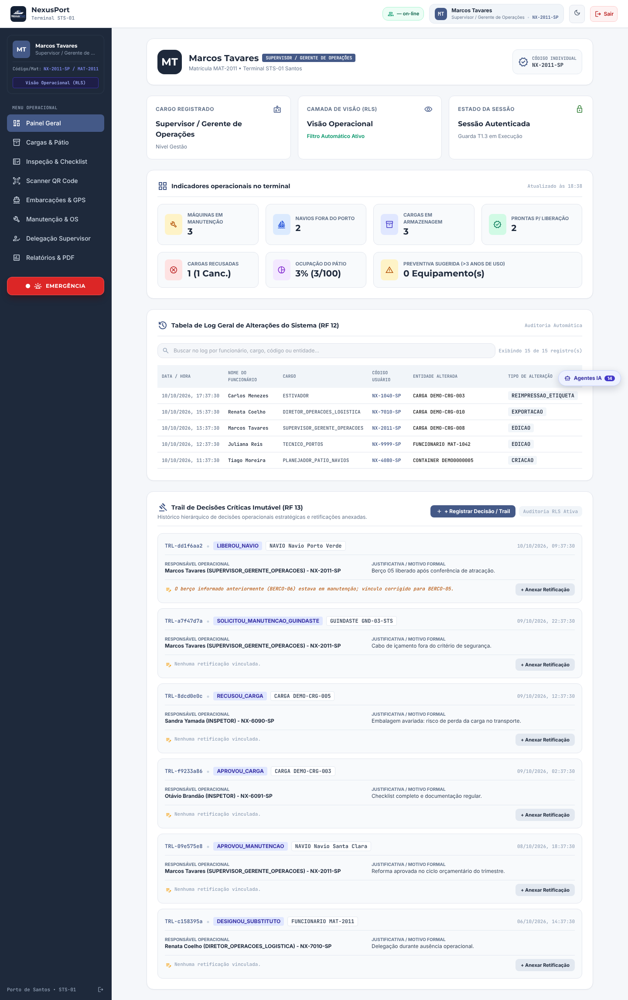
Ver as capturas desta conta Ir para a galeria desta contaTécnico em Portos
MAT-9999NX-9999-SPConta da guarita: cadastra funcionários e visitantes, valida documentos e reemite credenciais (RN 15), com acesso apenas à própria operação.
5 telas capturadas nesta conta.
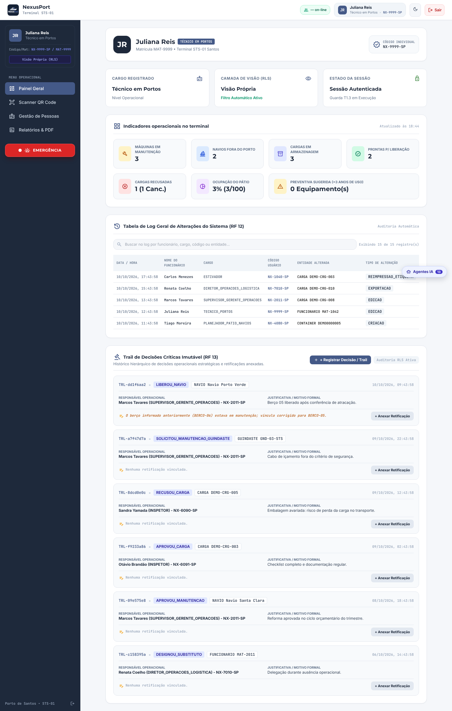
Ver as capturas desta conta Ir para a galeria desta contaAbaixo está cada tela capturada, com o que ela faz, as decisões registradas e as imagens de cada conta que tem acesso. Clique em qualquer imagem para ampliar.
index.html
Código individual único (matrícula)
Porta de entrada do sistema. O operador informa o código individual vinculado à matrícula; o sistema valida no cadastro do terminal e encaminha para a confirmação de cargo.
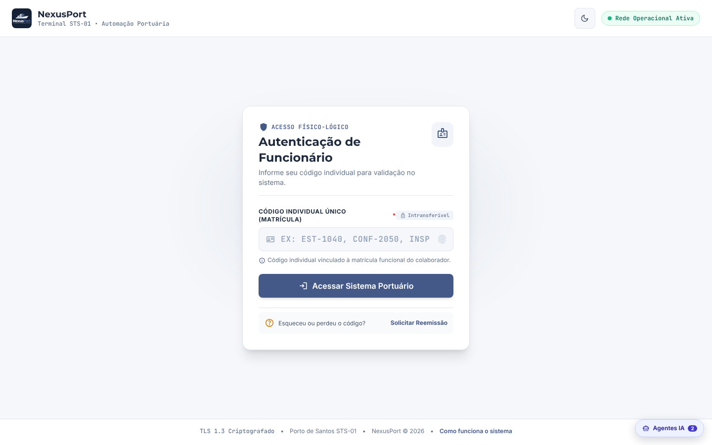
Ampliar imagemTela pública (não exige sessão)
confirm-role.html
Etapa obrigatória antes do painel
Mostra o cargo, o nível de acesso e a camada de visão que a sessão receberá. O cargo não é editável: vem do cadastro funcional, conforme o RF 1.
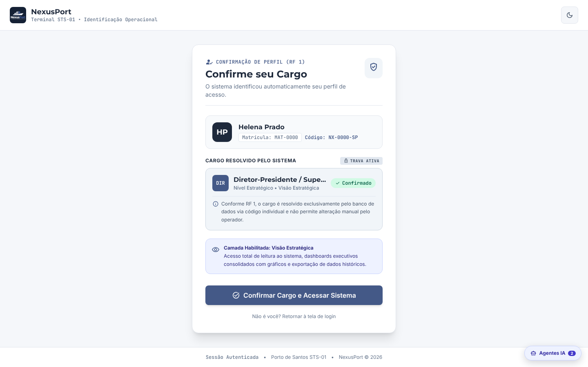
Ampliar imagemContas de demonstração com acesso: MAT-0000, MAT-2011, MAT-9999
dashboard.html
KPIs, gráficos por camada de visão e trilha de decisões
Visão geral do terminal: indicadores, gráficos recortados pela camada de visão do cargo, atividade recente da auditoria e trilha imutável de decisões.
MAT-0000 Helena Prado — Diretor-Presidente/Superintendente
MAT-2011 Marcos Tavares — Supervisor / Gerente de Operações
MAT-9999 Juliana Reis — Técnico em Portos
Contas de demonstração com acesso: MAT-0000, MAT-2011, MAT-9999
cargas.html
Agendamento, recebimento, armazenagem e vínculo com navio/contêiner
Coração do fluxo operacional: cadastro e acompanhamento das cargas nos 9 status, do agendamento à entrega, com checklist de avarias, QR Code e etiqueta A4.
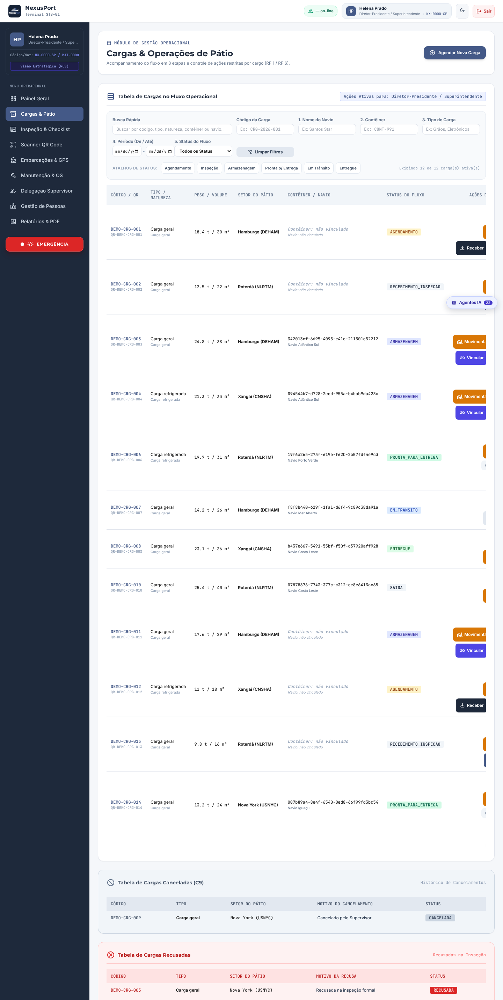
Ampliar imagemContas de demonstração com acesso: MAT-0000, MAT-2011
inspecao.html
Conformidade técnica com resultado auditável
Execução do checklist técnico de recebimento: cada item é marcado como conforme ou não conforme e a inspeção é concluída como aprovada ou recusada.
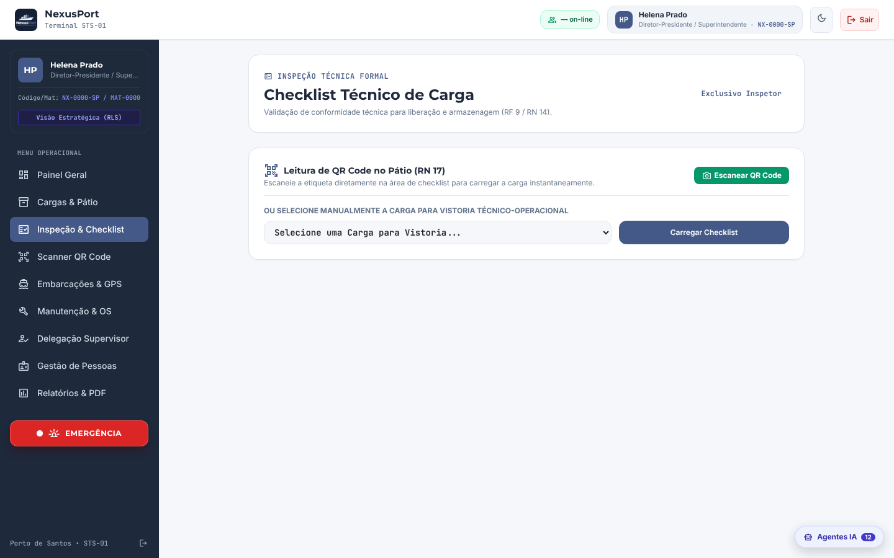
Ampliar imagemMAT-0000 Helena Prado — Diretor-Presidente/Superintendente
MAT-2011 Marcos Tavares — Supervisor / Gerente de Operações
Contas de demonstração com acesso: MAT-0000, MAT-2011
scanner.html
Leitura móvel por câmera ou entrada manual
Leitura de etiquetas QR das cargas, contêineres e guindastes. Aceita câmera do dispositivo ou digitação do código, com registro da leitura e histórico.
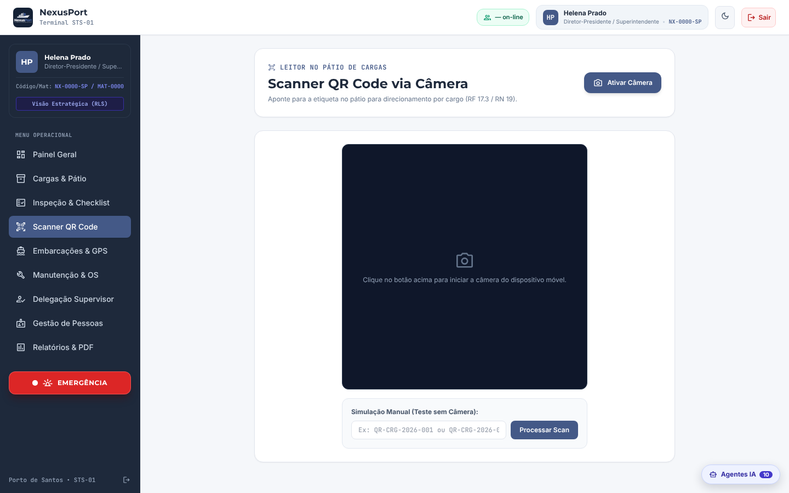
Ampliar imagemContas de demonstração com acesso: MAT-0000, MAT-2011, MAT-9999
embarcacoes.html
Atracação, berços, rotas e posição dos navios
Gestão das embarcações e do pátio: cadastro de navios e contêineres, estado operacional, berços do terminal, rotas marítimas e posicionamento GPS com ETA.
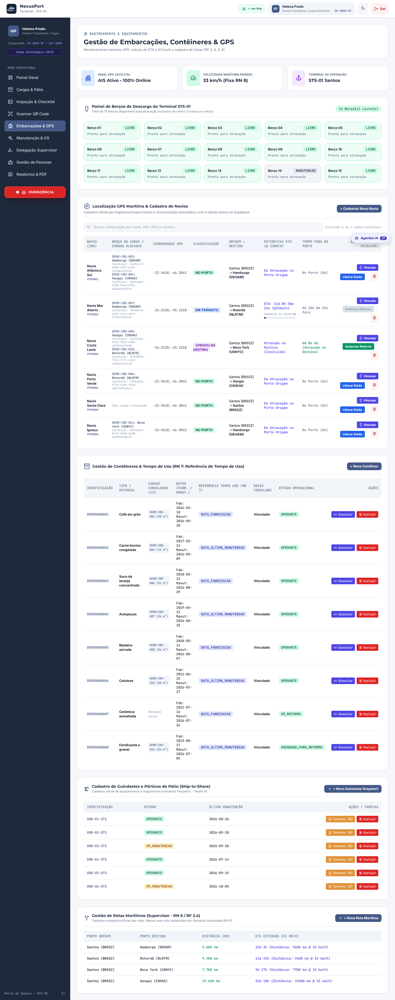
Ampliar imagemContas de demonstração com acesso: MAT-0000, MAT-2011
manutencao.html
Abertura, aprovação e conclusão de OS
Ciclo de manutenção de navios, contêineres e guindastes: solicitação, aprovação ou recusa e conclusão, com histórico de serviços e o botão de pânico global no cabeçalho.
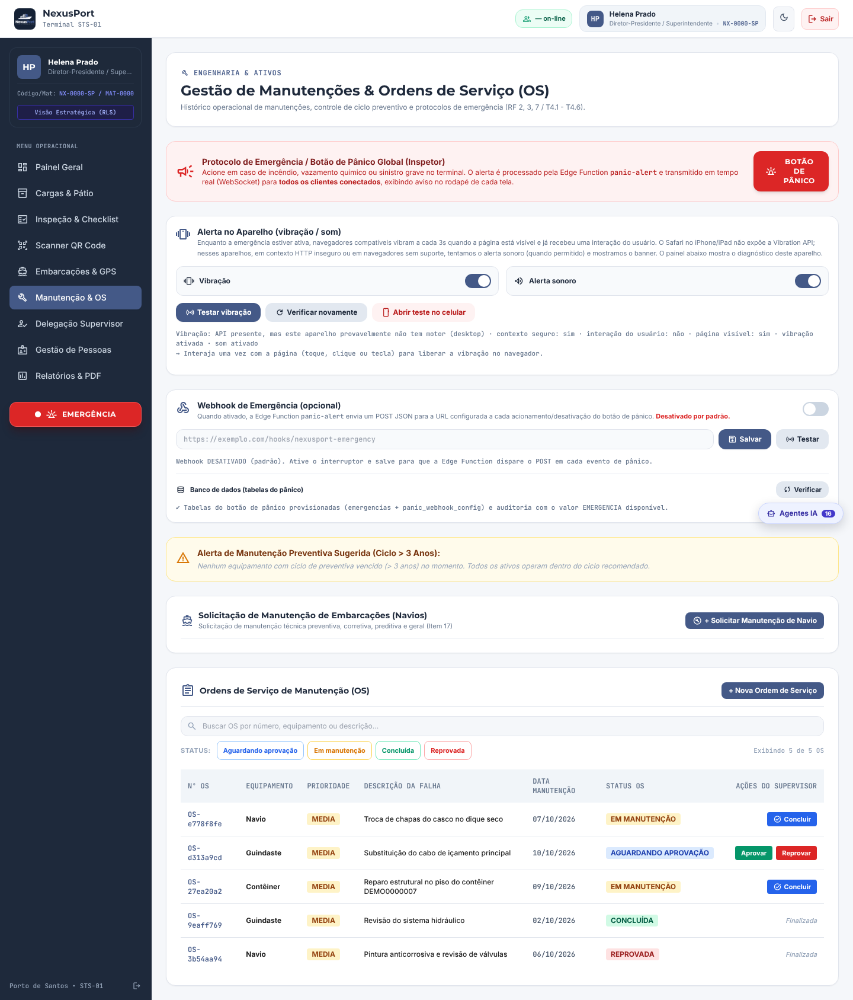
Ampliar imagemContas de demonstração com acesso: MAT-0000, MAT-2011
delegacao.html
Substituto temporário com vigência e revogação
Designa um substituto para o supervisor titular durante uma ausência, com janela de vigência, requalificação do cargo do substituto e revogação registrada na trilha.
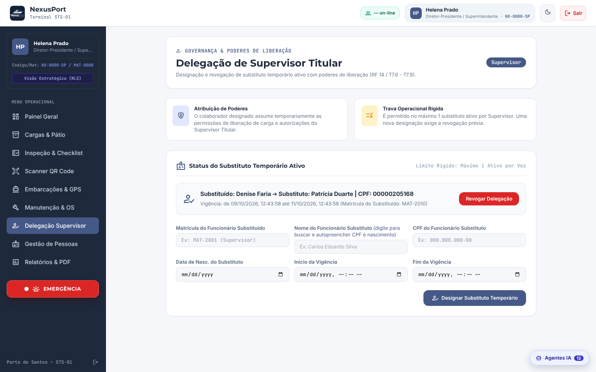
Ampliar imagemContas de demonstração com acesso: MAT-0000, MAT-2011
tecnico_portos.html
Funcionários, visitantes, documentos e reemissão de credencial
Cadastro e manutenção do quadro funcional e dos visitantes, emissão de códigos individuais, controle de documentos e reemissão de credenciais (RN 15).
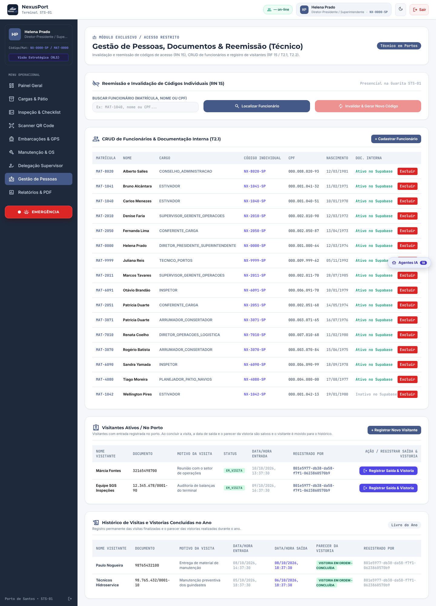
Ampliar imagemContas de demonstração com acesso: MAT-0000, MAT-9999
relatorios.html
Busca operacional com 5 filtros e emissão de PDF A4
Busca operacional sobre as cargas com cinco filtros combinados, exportação de histórico e geração de relatório PDF A4 com o logotipo do terminal.
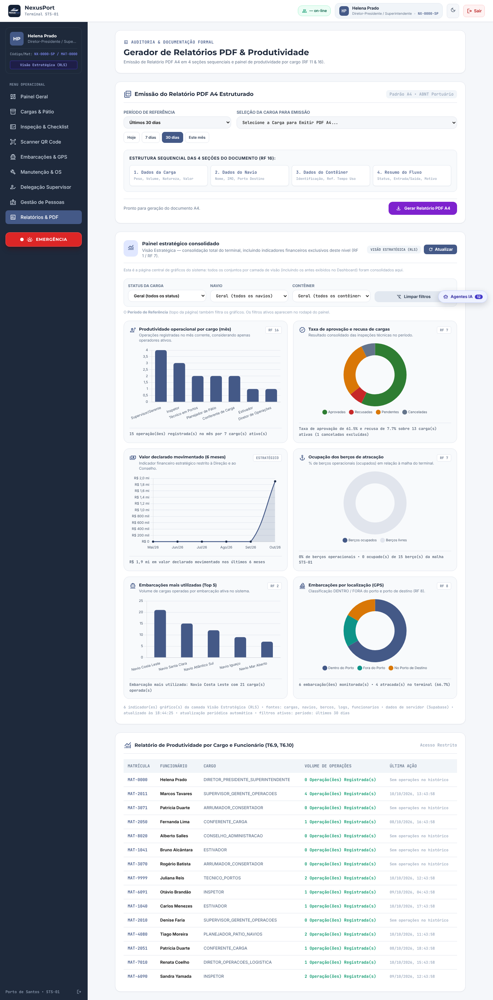
Ampliar imagemContas de demonstração com acesso: MAT-0000, MAT-2011, MAT-9999
teste-vibracao.html
Diagnóstico do alerta tátil
Página de diagnóstico que testa a vibração e o áudio do alerta de emergência no dispositivo do operador.
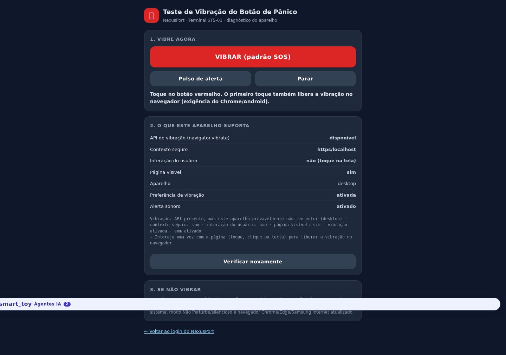
Ampliar imagemTela pública (não exige sessão)
As imagens desta página não são montagens: cada uma é uma captura de página inteira feita por Chromium automatizado, entrando de verdade pelas três contas de demonstração.
docs/screenshots/manifest.json.npm install --prefix tools/screenshots
CHROME_PATH=/usr/bin/chromium node tools/screenshots/capturar.js
node tools/screenshots/gerar-about.jscp js/config.example.js js/config.js # informe URL e chave anônima
supabase db push # aplica as migrações
supabase functions deploy panic-alert --no-verify-jwtSem as chaves, o sistema abre em modo local/simulação — útil para demonstrar a navegação.
npm start # http://localhost:3000
npm run build # dist/ minificado (o mesmo que a Vercel publica)Entre com um código individual de demonstração, por exemplo MOCK-INSPETOR-123, ou com uma das três contas desta página.
npm test # suíte completa (jsdom)
npm run audit:xss # regressão anti-XSS
npm run test:webmcp # ferramentas de agentes de IA
npm run lighthouse # gate de qualidade por páginaREADME.md — visão geral dos recursos e da implantação.SPECs/Spec.md — requisitos funcionais e regras de negócio.SPECs/schema.sql e TABLES.md — banco de dados.SPECs/webmcp.md — arquitetura das ferramentas de IA.